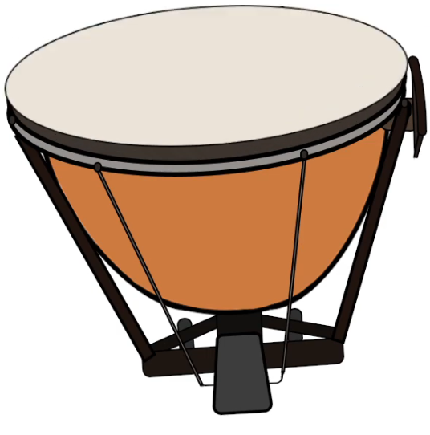
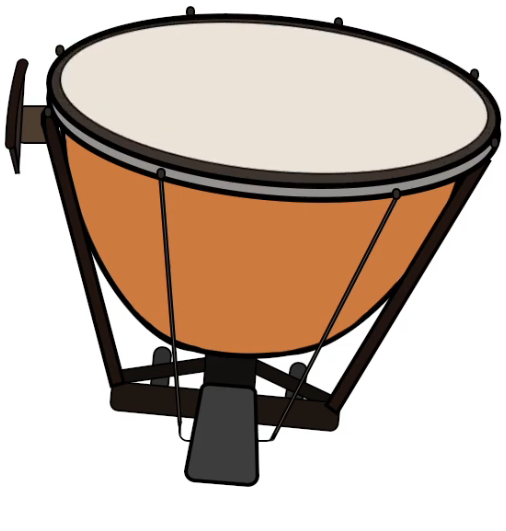

0
❚❚
팀파니
모먼트
베토벤 교향곡 8번 1악장 · 알레그로 비바체 에 콘 브리오
오케스트라가 연주하는 동안 두 대의 팀파니를 두드려 보세요.
파
왼쪽 팀파니 · L
도
오른쪽 팀파니 · R
연주 시작
왼쪽·오른쪽 팀파니를 직접 터치하거나
← → / A L 키로 연주할 수 있어요
반주: London Philharmonic Orchestra “Timpani Moments – Beethoven 8” · 작곡 L. v. Beethoven
youtu.be/cU-1WOYfpAM
A
0
정확도 100%
0
Perfect
0
Good
0
Miss
0
Max Combo
다시 연주
처음으로